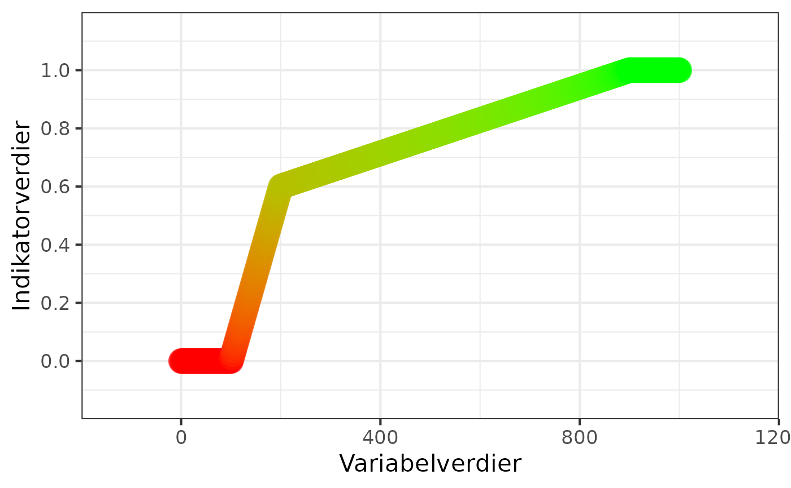
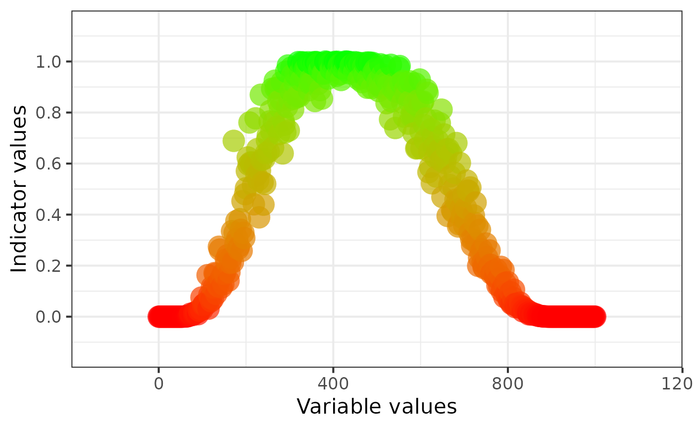

ec_norm_plot
ec_norm_plot.RdPlot normalised ecological indicator values against the raw variable values
Details
Creates a scatter plot comparing raw variable values and corresponding
normalised indicator values produced by ec_normalise_dev().
The plot is intended as a simple diagnostic and visualisation tool for evaluating ecological normalisation functions.
Points are coloured according to the indicator value using a red-to-green colour gradient.
The function returns a ggplot2 object and can therefore be further modified
using standard ggplot2 syntax.
Examples
x <- seq(0, 1000, by = 2)
ind <- ec_normalise(
variable = x,
x0 = 100,
x100 = 900,
x60 = 200
)
ec_norm_plot(
variable = x,
indicator = ind,
lan = "norsk"
)

ind <- ec_normalise(
variable = x,
x0 = 50,
x100 = rnorm(n = length(x), 400, 50),
x0h = 900,
fun = "sigmoid"
)
ec_norm_plot(
variable = x,
indicator = ind
)
